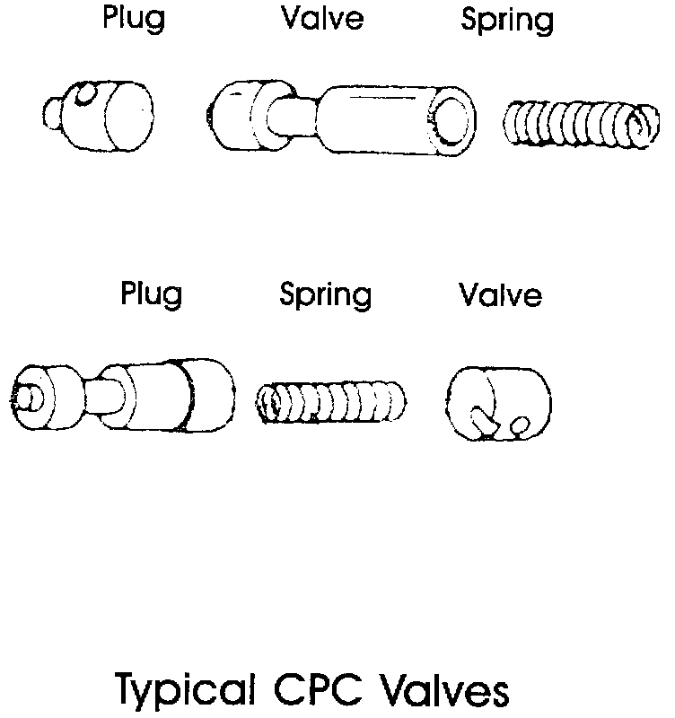
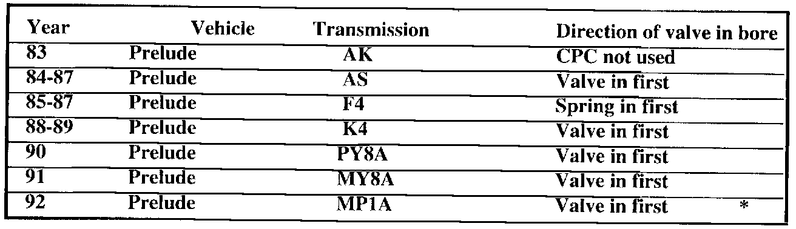
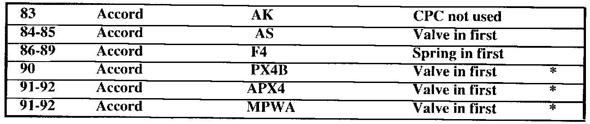
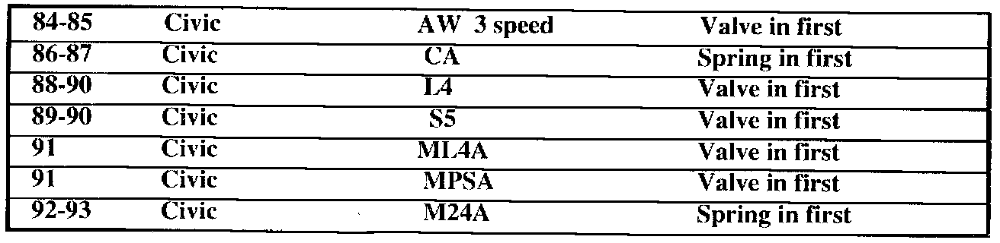
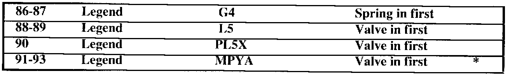
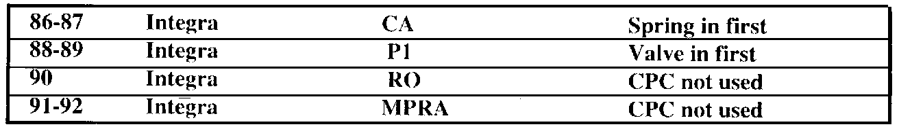
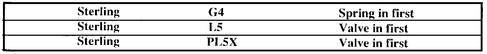

A/T - No Upshift No Line Pressure After Rebuild
January, 1994Technical
Bulletin # 208
^ Transmission: 4 speed automatic (See chart)
^ Subject: No upshift
^ Application: Honda, Acura, Sterling
Honda - Acura - Sterling
No upshift

On many models of Honda, Acura, and Sterling transmissions the clutch pressure control valve (CPC valve) can be installed backwards into the valve body bore resulting in no line pressure reaching the 1-2 shift valves.
The chart on the indicates which models have CPC valves and which ones can be installed backwards. Consult your service manuals for exact location of the CPC valve for your model of transmission.

Prelude

Accord

Civic

Legend
Vigor

Integra

Sterling
This information is for U.S. designed models only.
* The valve can not be installed backwards